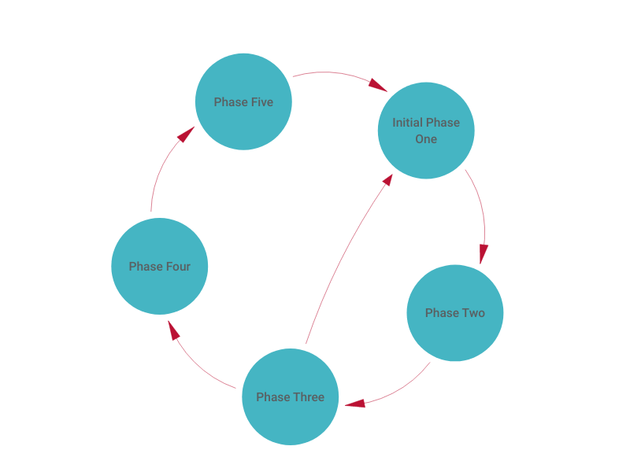
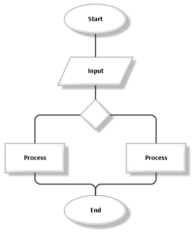
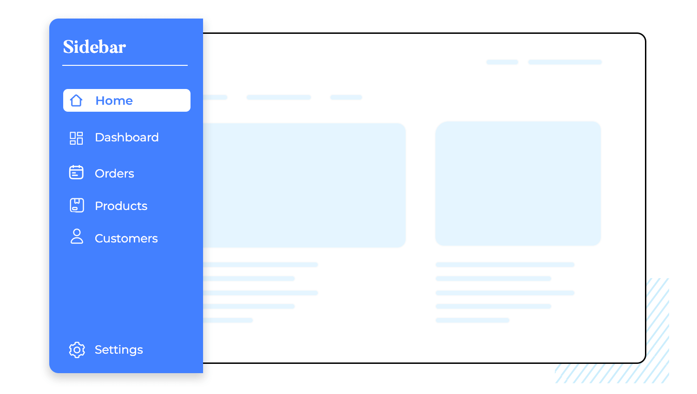
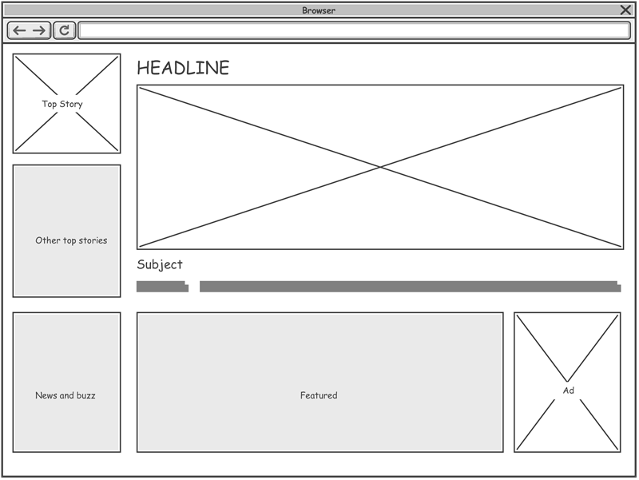
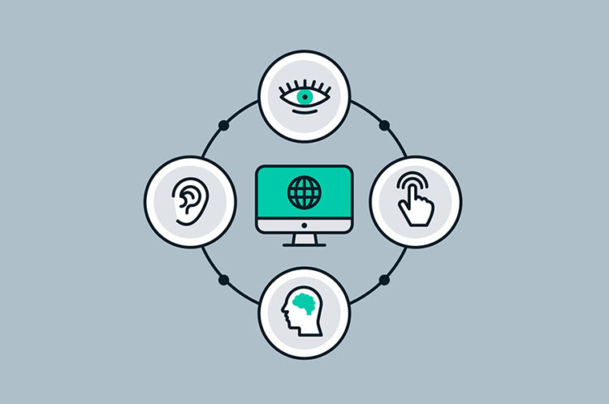

Digital environments today are more complex, more interconnected, and more influential than ever.
As a DevOps architect, I believe that solving real problems requires more than just focusing on
the user interface. It requires a systems-thinking mindset: one that recognizes how people,
technology, processes, and information all interact within an ecosystem.
This website presents the four areas I prioritize when designing digital systems:
Systems design
Focus on designing scalable, maintainable, and resilient systems that anticipate long-term changes.
Information architecture
Structure and organize information clearly, so users can navigate, understand, and trust the system.
User experience & visual design
Create intuitive, inclusive, and visually clear interfaces that support users’ tasks and goals.
Misinformation & information integrity
Ensure content reliability, highlight verified information, and design systems to prevent confusion or manipulation.
These principles guide me toward building digital spaces that are scalable, usable,
trustworthy, and meaningful.
From User-Centered Design to Systems Thinking
Modern digital environments demand more than user-centered design. While UCD focuses on individual
needs, it often fails to consider long-term complexity, organizational constraints, and interdependent
system behavior. Sustainable digital solutions must be informed by systems thinking and supported by
engineering structures that anticipate change.
1. Move Beyond User-Centered Blind Spots
User-centered design (UCD) has valuable principles — but it also has real limitations.
UCD can create a narrow focus on the immediate user experience while ignoring:
- Organizational constraints
- Technical limitations
- Infrastructure requirements
- Long-term sustainability
- Impact on other parts of the system
Why this matters: When decisions focus only on the “end user,” teams often create solutions that feel good short-term but break later, require costly rework, or fail to scale.
My priority: Take insights from UCD, but avoid designing blindly around the user. Always ask: How will this change impact the larger system?
2. Adopt a Systems-Thinking Mindset
Systems thinking means looking at parts and the relationships between them. A digital environment
is not just code — it is people, workflows, data flows, infrastructure, policies, and goals.
- Identify root causes instead of symptoms
- Improve system resilience
- Understand upstream and downstream effects
- Prevent bottlenecks and unintended consequences
My priority: When designing technical environments, I map connections and interactions across teams, tools, and system layers before making decisions.
3. Integrate Design Thinking + Systems Thinking
Design thinking helps us empathize with people, while systems thinking helps us understand complexity.
- Human-centered and sustainable
- Creative, but grounded in reality
- Scalable across teams and time
My priority: Use design thinking to explore possibilities — and systems thinking to implement solutions responsibly.

Feedback Loop

System Flowchart
 Architecture
Architecture
Information Architecture: Structure Before Style
Information architecture (IA) determines how users navigate, understand, and trust information.
Without strong IA, even the most beautiful design collapses. The Interaction Design Foundation and
Figma describe IA as the backbone of clarity and usability.
1. Clear and Predictable Navigation
A well-designed navigation system allows users to instantly understand where they are and
where they can go next. Confusion in navigation is one of the most common reasons users
abandon digital products.
Why this matters: Good IA reduces cognitive load, increases efficiency, and helps users trust the environment.
2. Logical Content Hierarchy
People scan before they read. A strong hierarchy organizes content from general → specific,
helping users find answers quickly.
Why this matters: Proper hierarchy improves comprehension and reduces effort.
3. Labels That Match User Expectations
- Predictable
- Non-technical
- Consistent
Why this matters: Labels act as signposts. When they are confusing, users misinterpret pages or abandon tasks.
 Sitemap
Sitemap
Hierarchy Tree

Clear Navigation
Clarity First: Designing for Meaning, Not Decoration
Visual design and UX are not about making things look “pretty.” They support clear information,
smooth tasks, and trustworthy interactions. According to Nielsen Norman Group, usability depends
on learnability, efficiency, memorability, error reduction, and satisfaction.
1. Usability Before Decoration
Beautiful websites fail when they hide content, overwhelm users, or make simple tasks confusing.
My belief: Aesthetic design should support, not overshadow, clarity. Form follows function, not the other way around.
2. Accessibility and Inclusivity
- Clear contrast
- Readable typography
- Keyboard accessibility
- Meaningful alt text
- Predictable interaction patterns
Why this matters: Good UX is inclusive UX.
3. Reduce Cognitive Load
- Consistent layouts
- Chunked content
- Whitespace
- Intuitive interface patterns
Why this matters: Low cognitive load = higher satisfaction and fewer mistakes.

Wireframe
Clean UI

Accessibility
Designing for Information Integrity
Modern digital environments face increasing risks of misinformation and disinformation.
According to the Foundation for Individual Rights and Expression, misinformation is false content
shared unknowingly, while disinformation is false content shared intentionally.
As architects of digital systems, we must design environments that encourage accurate interpretations
and protect information integrity.
1. Highlight Verified & Authoritative Information
Systems should give users clear signals about official content, verified publishers, and reliable sources.
2. Use IA to Reduce Misinterpretation
- Grouping trustworthy content
- Clarifying categories
- Making facts easier to find
- Reducing ambiguity
3. UX Patterns That Build Trust
- Consistent layouts
- Transparent language
- Clear authorship labels
- Predictable interactions
4. Systems Thinking to Address Information Risks
Misinformation spreads because systems are interconnected. One small weak point can influence the entire network.
My priority: Use systems thinking to map vulnerabilities and reinforce the environment against manipulation.
Information Protection
Fact-checking
Misinformation Warning
About This Project
This website represents my strategic priorities as a DevOps architect. Drawing from systems thinking,
design thinking, information architecture, user experience, and modern information integrity challenges,
these principles guide the way I approach digital environments.